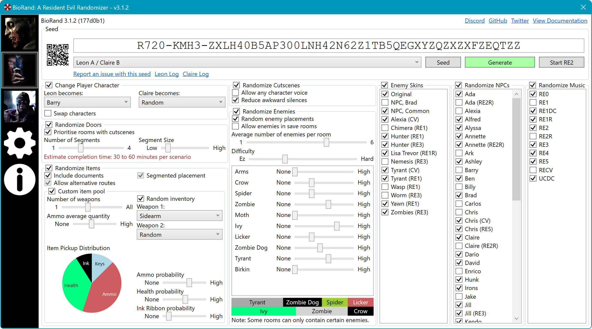

- weapons
- items
- enemies
- music
- ammo quantity
- characters
- enemy positions
- keys
- doors
- your starting inventory
- enemy skins
- cutscenes
- enemy ratios
- the difficulty
- item ratios
What is BIORAND?
In video games, a randomizer modifies various aspects of the game, such as enemy and item locations, to provide a new experience with each playthrough thus increasing the replayability value.
BIORAND is a randomizer for the original Resident Evil games released on PC:
- Resident Evil
- Resident Evil 2
- Resident Evil 3: Nemesis
BIORAND can randomize just about anything including doors, item locations, enemies, characters, cutscenes, background music, and much more.
Great for streamers
Randomizers are not just fun to play, but they are also very entertaining to watch. Opening that next door is as much as a surprise to your audience as it is to you. Amuse them with countless challenges and surprises.
Very Configurable
The user interface provides a huge amount of customisation so that you can tweak the experience to your own satisfaction.
Downloads
Select the bundle you would like to download. You can download BioRand on its own or with Resident Evil and optionally the community HD packs.
BioRand
- BioRand
Resident Evil + BioRand
- Resident Evil
- Resident Evil 2
- Resident Evil 3: Nemesis
- Resident Evil Rebirth
- BioRand
Resident Evil + HD pack + BioRand
- Resident Evil + HD pack
- Resident Evil 2 + HD pack
- Resident Evil 3: Nemesis + HD pack
- Resident Evil Rebirth
- HD mod
- Seamless HD project
- BioRand
The bundles above contains the following:
- Resident EvilMediaKite
- Resident Evil 2Sourcenext 1.10
- Resident Evil 3: NemesisSourcenext
Please support the teams behind the Rebirth and HD projects, for providing so many quality-of-life improvements to the game.
Beta Testing
Get access to the latest features by beta testing development builds of BioRand. Raise bug reports and help improve the stability of BioRand for the next release.
To download development builds, you will need to create a GitHub account, then follow the link on the right. Choose the latest build then scroll down to artifacts and download the build archive.
Glossary
Here are some terms you may come across during your randomizer journey.
Seed
Your unique configuration of the game. Seeds are expressed as QR codes or a alphanumeric code, that can be shared.
Run / Rando
A playthrough of the game randomized using a particular seed.
Key Item
A key or key item is an item that is required to progress through the game, or to obtain another item. For example, the heart key to enter the basement, or the unicorn medal to obtain the item in the RPD hall's statue.
Segmented Run
A segmented run is one of which consists of two or more segments which constrain key items for a specific area to that area. For example, in Resident Evil 2, a segmented run would ensure all RPD key items are in the RPD, all sewer key items are in the sewer and all lab key items are in the lab. A non-segmented run could result in a lab key appearing in the RPD.
Spoiler Log
The spoiler log is a text document that is generated alongside a seed. It lists where every key item, and weapon is amongst all the other changes performed by the randomizer. Use this to help you find where an item is if you get stuck.
Softlock
A point in the run where you are unable to progress. This can be due to many reasons such as BIORAND producing a seed which is too difficult, a crash or glitch in Resident Evil, or a bug in BIORAND where a key item might be unobtainable. In some situations, replaying the same seed, or loading an older saved game, with a different strategy can allow you to progress. Sometimes you may just have to quit and try a new seed. Should you encounter an impossible seed not caused by difficulty, or a crash, please raise a bug report.